Подборку собрали 4 ноября, прошедшие события скрыты. Свежая афиша — на главной
Выходные 7–8 ноября
Чем заняться в выходные в Петербурге
На выходных, 7–8 ноября, в нашей афише 18 событий, среди них 9 выставок, 5 спектаклей и 1 концерт. А если хочется просто выбраться из дома, у нас 60 планов на день: парк, усадьба или музей, а потом обед или кофе рядом.
- 18 событий
- 60 планов
Афиша на 7–8 ноября 18
Центр современного искусства им. Сергея Курёхина · м. Горный институт
Юбилейный, десятый фестиваль уличного искусства: больше тридцати стрит-артистов переносят свои работы в залы Центра Курёхина. В программе есть лекции о граффити.
Подробнее: Арт-Стена. СуперноваПозвать сюда: Арт-Стена. СуперноваБилеты : Арт-Стена. Супернова (страница с билетами, откроется в новой вкладке)
Музей «Эрарта» · м. Горный институт · 1 500–2 950 ₽
Итальянский фэшн-фотограф, четверть века работавший с Vogue Italia: портреты звёзд, моделей и дизайнеров эпохи большой моды. Легко и красиво смотреть с подругами.
Подробнее: Бардо Фабиани. Память о прекрасном прошломПозвать сюда: Бардо Фабиани. Память о прекрасном прошломБилеты : Бардо Фабиани. Память о прекрасном прошлом (страница с билетами, откроется в новой вкладке)
Музей ОБЭРИУ · м. Горьковская · от 950 ₽
Новая экспозиция в бывшей квартире Введенского о женщинах круга обэриутов: художницах, музах и хранительницах архивов.
Подробнее: Дочь дочери дочерей дочериПозвать сюда: Дочь дочери дочерей дочериБилеты : Дочь дочери дочерей дочери (страница с билетами, откроется в новой вкладке)
Эрмитаж, Главный музейный комплекс · м. Адмиралтейская
Шёлковые придворные халаты, портреты цинских полководцев и воссозданный кабинет китайского учёного в Гербовом зале. Выставка работает до 22 ноября — успейте.
Подробнее: Императорский Китай. Династия Цин (1644–1911)Позвать сюда: Императорский Китай. Династия Цин (1644–1911)Билеты : Императорский Китай. Династия Цин (1644–1911) (страница с билетами, откроется в новой вкладке)
Эрмитаж, Главный музейный комплекс · м. Адмиралтейская
Эскизы, по которым швейцарские мастера собирали цветные окна для ратуш и домов. Тонкая графика в небольшой галерее — приятная пауза после парадных залов.
Подробнее: Линии света. Швейцарские рисунки для витражей XVI–XVII вековПозвать сюда: Линии света. Швейцарские рисунки для витражей XVI–XVII вековБилеты : Линии света. Швейцарские рисунки для витражей XVI–XVII веков (страница с билетами, откроется в новой вкладке)
РОСФОТО · м. Адмиралтейская · 0+
Нижний Новгород 1896-го на старинных снимках: павильоны большой Всероссийской выставки, электрическая дорога и воздухоплавательный парк. Тихий музей рядом с Исаакием.
Подробнее: Россия 1896. К юбилею Нижегородской промышленной и художественной выставкиПозвать сюда: Россия 1896. К юбилею Нижегородской промышленной и художественной выставкиБилеты : Россия 1896. К юбилею Нижегородской промышленной и художественной выставки (страница с билетами, откроется в новой вкладке)
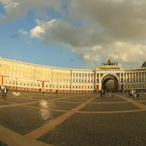
Эрмитаж, Главный штаб · м. Адмиралтейская
Полузабытый художник, проживший жизнь между Россией и Францией: картины из частного фонда в залах Главного штаба. Удобно совместить с импрессионистами в том же здании.
Подробнее: Русский парижанин Константин КузнецовПозвать сюда: Русский парижанин Константин КузнецовБилеты : Русский парижанин Константин Кузнецов (страница с билетами, откроется в новой вкладке)
Фото: Max A. Khlopov, CC BY-SA 3.0 · Wikimedia Commons
Манеж · м. Адмиралтейская · 100–800 ₽ · 12+
Тысяча с лишним экспонатов из 98 собраний страны: шаляпинский наряд царя Бориса, кусок занавеса Боровского с таганковского «Гамлета» и головинский занавес «Маскарада».
Подробнее: Сцена действияПозвать сюда: Сцена действияБилеты : Сцена действия (страница с билетами, откроется в новой вкладке)
Музей «Эрарта» · м. Горный институт · 1 500–2 950 ₽
Кастомные «харлеи», архивные фото и истории владельцев: каждый байк тут — портрет хозяина. Отличный повод привести в музей тех, кто в музеи обычно не ходит.
Подробнее: Harley-Davidson. Дух свободыПозвать сюда: Harley-Davidson. Дух свободыБилеты : Harley-Davidson. Дух свободы (страница с билетами, откроется в новой вкладке)
Замок на Невском · м. Маяковская · от 1 600 ₽ · 12+
Иммерсивное мистическое шоу: герои «Шинели», «Носа» и «Вия» в одном сюжете, а зритель может вмешаться в ход действия. По пятницам и субботам в 19:00, недорого.
Подробнее: Петербург ГоголяПозвать сюда: Петербург ГоголяБилеты : Петербург Гоголя (страница с билетами, откроется в новой вкладке)
Commode · м. Маяковская · 390–1 990 ₽ · 18+
У микрофона только девушки-комики из Петербурга и Москвы: про бывших, свидания и всё наболевшее. Идёт почти каждый вечер на Невском — готовый план для девичника.
Подробнее: Стендап по-женскиПозвать сюда: Стендап по-женскиБилеты : Стендап по-женски (страница с билетами, откроется в новой вкладке)
Клуб А2 · м. Петроградская · 3 000–15 000 ₽ · 16+
Большой сольник Ёлки в А2: «Прованс», «Грею счастье» и другие песни, которые знает весь зал. Тёплый поп-концерт для субботнего вечера.
Подробнее: ЁлкаПозвать сюда: ЁлкаБилеты : Ёлка (страница с билетами, откроется в новой вкладке)
Temple of Deer · м. Площадь Ленина · 3 500–20 000 ₽ · 18+
Ночной транс-фестиваль Радио Рекорд: семь тематических миров со своим светом и визуалом, от морских глубин до космоса. Для тех, кто готов танцевать до утра.
Подробнее: Трансмиссия «Портал»Позвать сюда: Трансмиссия «Портал»Билеты : Трансмиссия «Портал» (страница с билетами, откроется в новой вкладке)
Иммерсивный театр «Морфеус» · м. Адмиралтейская · от 4 500 ₽ · 18+
Иммерсивный тру-крайм: вы присяжные, изучаете улики по делу о пропавшем подростке и решаете судьбу подозреваемого. Группа 6–14 человек, начало в 18:00–19:45.
Подробнее: Судный деньПозвать сюда: Судный деньБилеты : Судный день (страница с билетами, откроется в новой вкладке)
Мариинский-2 · м. Садовая · 1 100–8 000 ₽ · 12+
Верди о парижской куртизанке Виолетте — лучшая опера для первого знакомства с жанром. Поют по-итальянски с титрами; 7 ноября в 19:00, 8 ноября — в 13:00 и 19:00.
Подробнее: ТравиатаПозвать сюда: ТравиатаБилеты : Травиата (страница с билетами, откроется в новой вкладке)
КЦ Троицкий · м. Пролетарская · бесплатно · 12+
Бесплатный спектакль по «Евгению Онегину» в малом зале культурного центра, нужна регистрация.
Подробнее: Татьяна ЛаринаПозвать сюда: Татьяна ЛаринаБилеты : Татьяна Ларина (страница с билетами, откроется в новой вкладке)
Газпром Арена · м. Зенит
В воскресенье вечером «Зенит» принимает «Ростов» на «Газпром Арене». После игры можно всей компанией обсудить матч в баре неподалёку.
Подробнее: Зенит — РостовПозвать сюда: Зенит — РостовБилеты : Зенит — Ростов (страница с билетами, откроется в новой вкладке)
Иммерсивный театр «Морфеус» · м. Адмиралтейская · 3 000–3 500 ₽ · 18+
Иммерсивная комедия-расследование: после бурного девичника вы просыпаетесь в разгромленном номере, а невеста исчезла. Группа 2–8 человек, сеансы с 13:00 до 21:30.
Подробнее: До свадьбы доживётПозвать сюда: До свадьбы доживётБилеты : До свадьбы доживёт (страница с билетами, откроется в новой вкладке)
Планы на день 24 из 60
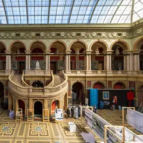
- Музей Штиглица · Музей · м. Чернышевская
- 3 минуты пешкомCasimir · Кофейня
Роскошные залы музея Штиглица, а через две минуты — уютная кофейня с осенним меню, чтобы согреться супом или оладьями.
Открыть план: Музей Штиглица и тыквенный супПозвать сюда: Музей Штиглица и тыквенный суп
Фото: Lion10~commonswiki, CC BY-SA 4.0 · Wikimedia Commons
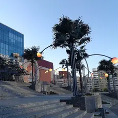
- Аквапарк «Питерлэнд» · Аквапарк · м. Беговая
- 1 минута пешкомПапаша Клаусс · Ресторан-пивоварня
Горки и тропическое тепло в любую погоду, а пивоварня с видом на залив — прямо по соседству.
Открыть план: Аквапарк и пивоварняПозвать сюда: Аквапарк и пивоварня
Фото: Vasyatka1, CC BY-SA 4.0 · Wikimedia Commons
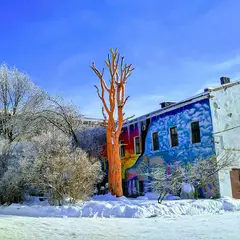
- Артмуза · Креативное пространство · м. Василеостровская
- 6 минут пешкомТрубочерия · Кондитерская
Огромное пространство современного искусства на Васильевском, а потом 6 минут пешком — кондитерская, где начинки вафельных трубочек меняются по сезону.
Открыть план: Артмуза и вафельные трубочкиПозвать сюда: Артмуза и вафельные трубочки
Фото: SoulMaker, CC BY-SA 4.0 · Wikimedia Commons
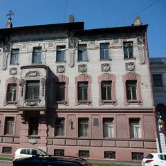
- Музей Набокова · Музей · м. Адмиралтейская
- 1 минута пешкомTeplo · Кафе
Коллекция бабочек в родовом особняке писателя на Большой Морской, а через дорогу — кафе-квартира с диванами и пледами.
Открыть план: Бабочки Набокова и кафе-квартираПозвать сюда: Бабочки Набокова и кафе-квартира
Фото: Vadim Zhivotovsky, CC BY 3.0 · Wikimedia Commons
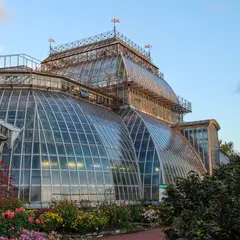
- Ботанический сад Петра Великого · Сад · м. Петроградская
- 15 минут пешкомLavraki bistro · Рыбный ресторан
Японский сад и оранжереи с тропиками старейшего ботсада страны, а потом 15 минут пешком — средиземноморский рыбный ресторан с видом на Большую Невку.
Открыть план: Ботанический сад и рыба у НевкиПозвать сюда: Ботанический сад и рыба у Невки
Фото: Александровы АГ, CC BY-SA 4.0 · Wikimedia Commons
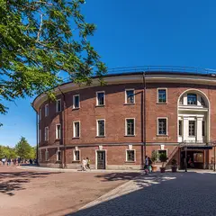
- Eggsellent · Кафе-кофейня · м. Садовая
- 5 минут пешкомНовая Голландия · Культурное пространство
Яйца во всех видах и хороший кофе на Мойке, а потом 5 минут пешком — остров с выставками, маркетами и лекциями.
Открыть план: Завтрак весь день и Новая ГолландияПозвать сюда: Завтрак весь день и Новая Голландия
Фото: Николай Булыкин, CC BY-SA 4.0 · Wikimedia Commons
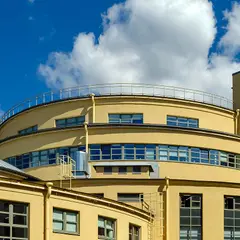
- Кафе на Хлебозаводе · Кафе-пекарня · м. Чкаловская
- 8 минут пешкомFrantsuza Bistrot · Французское бистро
Свежий хлеб и завтраки до обеда у бывшего Левашовского хлебозавода, а к обеду — 8 минут пешком до бистро с луковым супом и ягодными тартами.
Открыть план: Завтрак на Хлебозаводе и французское бистроПозвать сюда: Завтрак на Хлебозаводе и французское бистро
Фото: Никонико962, CC BY-SA 4.0 · Wikimedia Commons
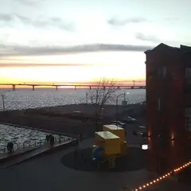
- Mntn coffee · Кофейня · м. Горный институт
- 2 минуты пешкомСевкабель Порт · Креативное пространство
- 4 минуты пешкомOnTap · Крафтовый бар
Латте с собой, закат у залива в бывшем кабельном заводе, а когда стемнеет — бар с длинным списком кранов прямо в порту.
Открыть план: Закат на Севкабеле и крафтПозвать сюда: Закат на Севкабеле и крафт
Фото: Бегущий из города, CC BY-SA 4.0 · Wikimedia Commons
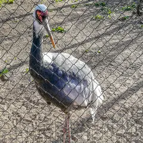
- Ленинградский зоопарк · Зоопарк · м. Горьковская
- 7 минут пешкомAtom Heart Coffee · Кофейня
Тигры, приматы и птицы в одном из старейших зоопарков страны, а потом 7 минут пешком — яркая кофейня в эстетике 60–70-х.
Открыть план: Зоопарк и кофейня в духе 70-хПозвать сюда: Зоопарк и кофейня в духе 70-х
Фото: Александровы АГ, CC BY-SA 4.0 · Wikimedia Commons
- Главный штаб Эрмитажа · Музей · м. Адмиралтейская
- 4 минуты пешкомЛитературное кафе · Ресторан
Матисс и Пикассо в светлых анфиладах Главного штаба, а через 4 минуты пешком — ужин в кафе с интерьерами XIX века, откуда Пушкин уехал на дуэль.
Открыть план: Импрессионисты и Литературное кафеПозвать сюда: Импрессионисты и Литературное кафе
Фото: Max A. Khlopov, CC BY-SA 3.0 · Wikimedia Commons
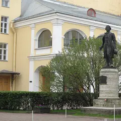
- Музей-квартира Пушкина · Музей · м. Адмиралтейская
- 3 минуты пешкомЧАО Какао · Какаочная
Кабинет и библиотека поэта у Конюшенной, а потом пара минут пешком — какаочная, где наливают густой горячий шоколад из окошка.
Открыть план: Квартира Пушкина и горячий шоколадПозвать сюда: Квартира Пушкина и горячий шоколад
Фото: Alexander Ardatov, CC BY 3.0 · Wikimedia Commons
- Буше · Пекарня-кофейня · м. Адмиралтейская
- 6 минут пешкомГлавный штаб Эрмитажа · Музей
Круассаны и эклеры в петербургской пекарне, а потом 6 минут пешком — импрессионисты и Матисс под стеклянными крышами Главного штаба.
Открыть план: Круассаны и Главный штабПозвать сюда: Круассаны и Главный штаб
Фото: Max A. Khlopov, CC BY-SA 3.0 · Wikimedia Commons
- Кунсткамера · Музей · м. Адмиралтейская
- 3 минуты пешкомЗоологический музей · Музей
- 12 минут пешкомProbka · Ресторан
Петровские диковины в первом музее России, потом скелеты китов и мамонтёнок в соседнем Зоологическом, а ужинать — через мост, в Probka.
Открыть план: Кунсткамера, киты и пастаПозвать сюда: Кунсткамера, киты и паста
Фото: Никонико962, CC BY-SA 4.0 · Wikimedia Commons
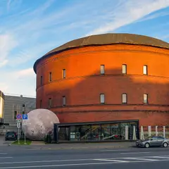
- Планетарий №1 · Планетарий · м. Технологический институт
- 15 минут пешкомКусацу · Японское бистро
Звёздная программа под одним из крупнейших куполов мира в старом газгольдере, а потом 15 минут пешком — крошечное японское бистро с кацу-сандо и матчей.
Открыть план: Купол в газгольдере и матча-бистроПозвать сюда: Купол в газгольдере и матча-бистро
Фото: Анастасия Юрьевна Львова, CC BY-SA 4.0 · Wikimedia Commons
- Mntn coffee · Кофейня · м. Горный институт
- 2 минуты пешкомСевкабель Порт · Креативное пространство
Берёте кофе в порту и выходите к заливу: бывший кабельный завод, выставки, а главное — закат прямо над водой.
Открыть план: Латте и закат на СевкабелеПозвать сюда: Латте и закат на Севкабеле
Фото: Бегущий из города, CC BY-SA 4.0 · Wikimedia Commons
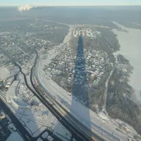
- Лахта Центр: обзорная площадка и набережная · Смотровая площадка · м. Беговая
- 24 минуты пешкомПарк 300-летия Санкт-Петербурга · Парк
Панорама города и залива с самого высокого небоскрёба Европы, а потом прогулка по молу парка 300-летия — солнце садится прямо в воду.
Открыть план: Лахта: 83-й этаж и закат над заливомПозвать сюда: Лахта: 83-й этаж и закат над заливом
Фото: TomPlay148, CC BY-SA 3.0 · Wikimedia Commons
- Корпус Бенуа Русского музея · Музей · м. Невский проспект
- 1 минута пешкомКафе Бенуа · Кафе
Русский XX век в корпусе Бенуа — Малевич, Петров-Водкин, Кандинский, — а потом красивые десерты в кафе прямо в колонном зале музея.
Открыть план: Малевич и десерты в колонном залеПозвать сюда: Малевич и десерты в колонном зале
Фото: Никонико962, CC BY-SA 4.0 · Wikimedia Commons
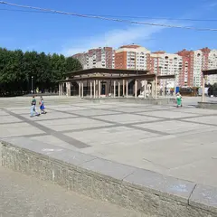
- Парк 300-летия Санкт-Петербурга · Парк · м. Беговая
- 24 минуты пешкомЛахта Центр: обзорная площадка и набережная · Смотровая площадка
Прогулка по длинному молу на закате, а потом подъём на 83-й этаж самого высокого небоскрёба Европы — огни города и залива.
Открыть план: Мол парка 300-летия и ЛахтаПозвать сюда: Мол парка 300-летия и Лахта
Фото: Germash19, CC BY-SA 4.0 · Wikimedia Commons
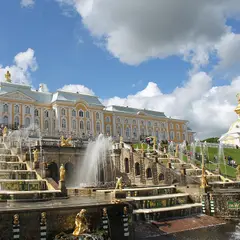
- Нижний парк Петергофа · Парк · ж/д Новый Петергоф
- дальше на метро или таксиПарк Александрия · Парк
Большой каскад и аллеи Нижнего парка до залива, а потом полчаса пешком вдоль воды (или пара минут на такси) — соседняя Александрия: готическая капелла и пустые тропинки.
Открыть план: Петергоф: каскады и АлександрияПозвать сюда: Петергоф: каскады и Александрия
Фото: Клеткин, CC BY-SA 3.0 · Wikimedia Commons
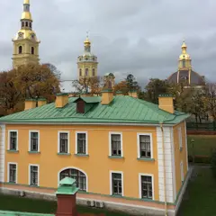
- Петропавловская крепость · Крепость · м. Горьковская
- 18 минут пешкомManneken Pis на Каменноостровском · Паб
Петропавловка к полудню — пушка бьёт с бастиона, вокруг вид на Дворцовую, — а потом прогулка к Горьковской, 18 минут пешком, в бельгийскую пивную.
Открыть план: Полуденный выстрел и бельгийское пивоПозвать сюда: Полуденный выстрел и бельгийское пиво
Фото: Vadim Fedin, CC BY 3.0 · Wikimedia Commons
- Бабка · Пекарня · м. Василеостровская
- 5 минут пешкомАртмуза · Креативное пространство
Пекарня, где главная звезда — плетёная сдобная бабка, а после кофе 5 минут пешком до Артмузы: выставки и мастерские.
Открыть план: Сдобная бабка и выставкаПозвать сюда: Сдобная бабка и выставка
Фото: SoulMaker, CC BY-SA 4.0 · Wikimedia Commons
- Музей Штиглица · Музей · м. Чернышевская
- 6 минут пешкомFrameis · Кафе-пекарня
Большой зал под стеклянным куполом — одно из самых красивых пространств города, — а потом 6 минут пешком — кафе на Моховой с собственной выпечкой.
Открыть план: Стеклянный купол Штиглица и булочка дняПозвать сюда: Стеклянный купол Штиглица и булочка дня
Фото: Lion10~commonswiki, CC BY-SA 4.0 · Wikimedia Commons
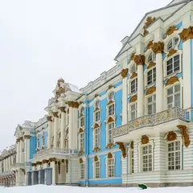
- Екатерининский парк · Парк · ж/д Царское Село
- 10 минут пешкомАлександровский парк (Пушкин) · Парк
Камеронова галерея и Большой пруд Екатерининского парка, а потом — тихий соседний Александровский с Китайской деревней и почти без туристов.
Открыть план: Царское Село: два парка за деньПозвать сюда: Царское Село: два парка за день
Фото: Никонико962, CC BY-SA 4.0 · Wikimedia Commons
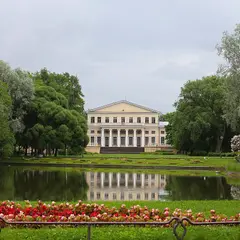
- Юсуповский сад · Сад · м. Садовая
- 1 минута пешкомMad Espresso Team · Кофейня
Пейзажный сад у Сенной с прудом и котами-старожилами, а у выхода — одна из ключевых спешелти-кофеен города.
Открыть план: Юсуповский сад и спешелтиПозвать сюда: Юсуповский сад и спешелти
Фото: KristenRyckaert, CC BY-SA 4.0 · Wikimedia Commons
Выходные в календаре
Бесплатные события и наш выбор на выходные — на две недели вперёд. Подпишись один раз, и календарь будет обновляться сам.
Подписаться в календаре: бесплатные события и выходные в ПетербургеGoogle Календарь: бесплатные события и выходные в Петербурге (откроется в новой вкладке)Файл .ics: бесплатные события и выходные в Петербурге
Как позвать
- Выбери план, место или событие — в карточке адрес, цены и маршрут в Яндекс Картах.
- Нажми «Позвать сюда» — соберётся приглашение-игра для свидания или голосование для компании.
- Отправь ссылку в любой мессенджер: тебе ответят, а компания отметит, куда и когда может. Бесплатно и без регистрации.